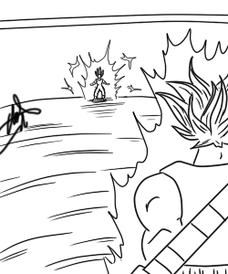
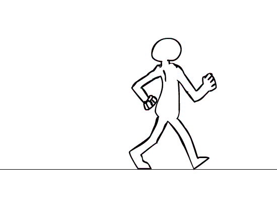
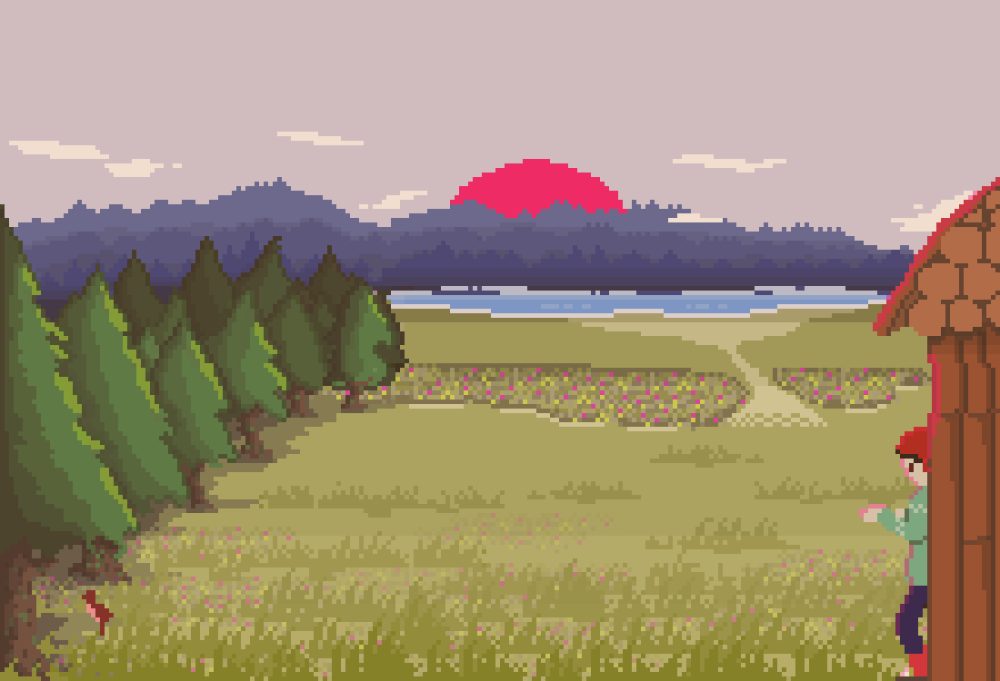
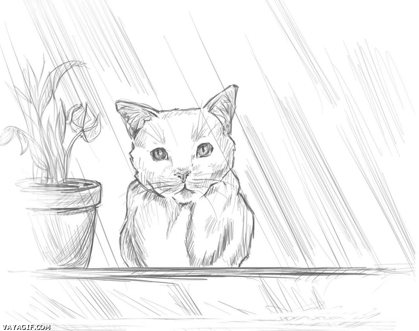
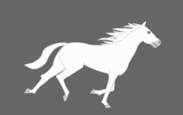
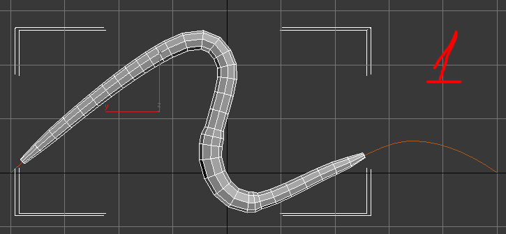
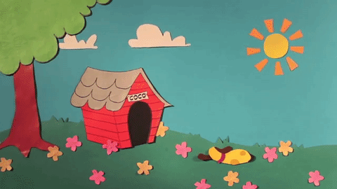
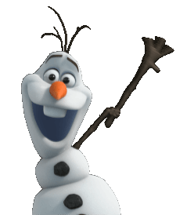
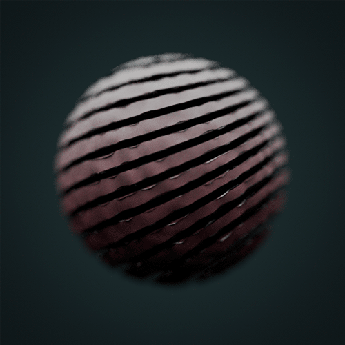

General
FOTOGRAMA:
Un fotograma es cada una de las imágenes impresas químicamente en la tira de celuloide del cinematógrafo o bien en la película fotográfica.
MOTOR GRAFICO:
Es un software creado con la finalidad de desarrollar videojuegos.
CODECS:
Abreviatura de codificador – decodificador, archivos multimedia que contienen tanto datos de audio como de video y una referencia que permite la sincronización del audio y el video.
KEYFRAMES:
Puntos en los que se realiza un cambio del estado en que se encuentra el objeto, como un cambio de posición, de dirección de tamaño o un cambio en los parámetros propios del objeto en relación a su estado anterior.
DRIVER:
Un controlador de dispositivo o manejador de dispositivo (en inglés: device driver, o simplemente driver) es un programa informático que permite al sistema operativo interaccionar con un periférico.
MS:
Abreviatura de milisegundos.
SW:
Abreviatura de software.
SPRITES:
Imágenes de mapa de bits que son dibujados en pantalla, sin la necesidad de exigirle un procesamiento adicional a la CPU.
TEXTURIZAR:
Forma más común de emplear el término de mapear una textura.
HD:
Del inglés High Definition, alta definición.
Animación 2D
POR CAPAS:
Tecnica donde el fondo de una imagen se mueve en cámara más lentamente que sus planos cercanos

POR COTAS:
Tecnica que consiste en basar el movimiento en unos fotogramas fundamentales.

STOP MOTION:
Tecnica donde se usan objetos, muñecos, marionetas, figuras de plastilina, carros, persona, o otros materiales.
PIXELACIÓN:
Tecnica donde se ilustra en un libro o cuaderno una serie de imágenes.

ANIMACIÓN TRADICIONAL:
Tecnica donde se ilustran cuadros individualmente, que al ser vistos de manera consecutiva forman una animación.

Animación 3D
ROTOSCOPIA:
Esta tecnica consiste en capturar un movimiento real, y utilizar esa información para mover un diseño generado por ordenador.

MODELO DE ESQUELETOS:
Tecnica de modelos formados por una única malla poligonal o por múltiples objetos.

ANIMACIÓN DE RECORTES:
En esta técnica se usan figuras recortadas, ya sea de papel o incluso fotografías.

ANIMACIÓN DIGITAL:
Tecnica realizada solamente con softwares especializados como Flash.

Morphing
DISTORSIÓN:
Esta tecnica utiliza únicamente una sola imagen, la cual es comprimida y estirada.

TRANSICIÓN:
Esta tecnica transforma una imagen en otra completamente diferente.